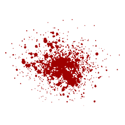
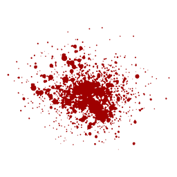

List of top 10
| Chilli | Scoville Heat Units (SHU) |
|---|---|
| Carolina Reaper | 2,200,000 SHU |
| Trinidad Moruga Scorpion | 2,009,231 SHU |
| 7 Pot Douglah | 1,853,936 SHU |
| 7 Pot Primo | 1,469,000 SHU |
| Trinidad Scorpion “Butch T” | 1,463,700 SHU |
1.Spicy Chili Con Carne
The previous world champion, Carolina Reaper has been beat! by itself… The Carolina Reaper is once again officially the Worlds Hottest Pepper.
Originally ranked as world’s hottest in 2013, the Reaper was tested again in 2018 with an even higher SHU. (71,000 SHU higher to be exact) This gives the reaper a renewed title as World’s Hottest!
It was bred for heat and that it is, with an average SHU of 1,641,000 SHU and peaks at 2.2 Million SHU!
Let’s put the scoville rating into perspective for you: The Carolina Reaper pepper is 200x hotter than a Jalapeno #WorldsHottestPepper Just looking at the pictures above, you know its one mean pepper. The Carolina Reaper has a unique stinger tail that is unlike any other pepper and every pod is different! It gets this insane heat from being a cross between a Ghost Pepper and a Red Habanero. Oddly enough this pepper doesn’t just have heat, but excellent fruity flavor to boot. Well, that is before it melts your face off.
2.Trinidad Moruga Scorpion
Straight from the depths of hell the Trinidad Scorpion Moruga Blend, AKA Moruga Scorpion, is a rare sought after pepper that was only just recently discovered.
Native to the lands of Moruga in Trinidad and Tobago. Once you take a bite of this formidable pepper the heat never stops building.
This pepper may be lacking the Reaper’s stinger, but don’t let that fool you. The Moruga Scorpion is every bit as hot as The Carolina Reaper.
3.7 Pot Douglah
Well renown in the pepper community as one of the hottest peppers with the best flavor.
The 7 Pot Douglah is the hottest pepper you can find that isn’t red.
The hottest “superhot” peppers are traditionally red, but the Douglah defies the odds by being brown AND scortching hot.
You can’t go wrong with fresh, dried, or powdered Douglah on any food.
Also known as 7 Pod Douglah, Chocolate 7 Pod or the 7 Pot Brown.
4.7 Pot Primo
The 7 Pot Primo is very distinctive with its long skinny “tail”.
This pepper was created by horticulturist Troy Primeaux.
Some peppers cultivators have tried to replicate the Primo look by breeding their own peppers to have a long stinger.
When you just look at this pepper, you know it’s going to be INSANELY hot. It coincidentally looks strikingly similar to The Carolina Reaper…
Popular sites whit chilli
 
>

>